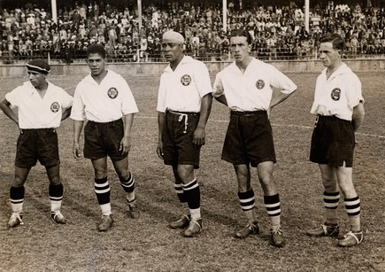
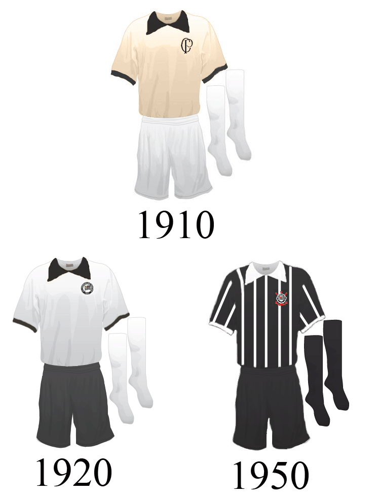
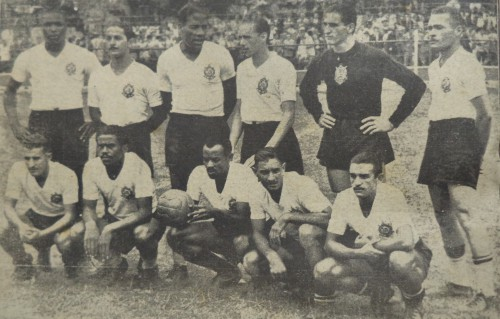
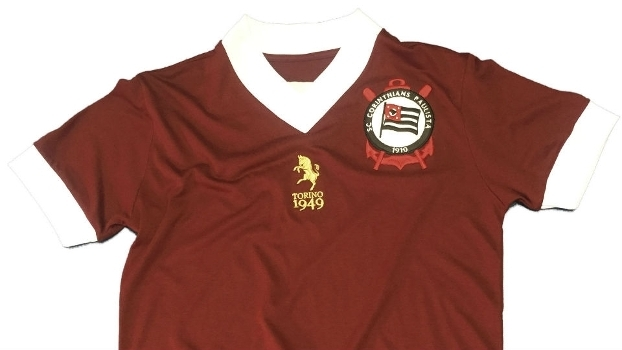
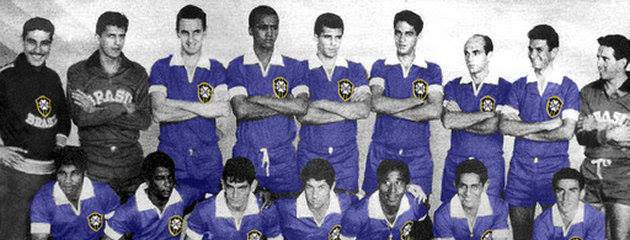
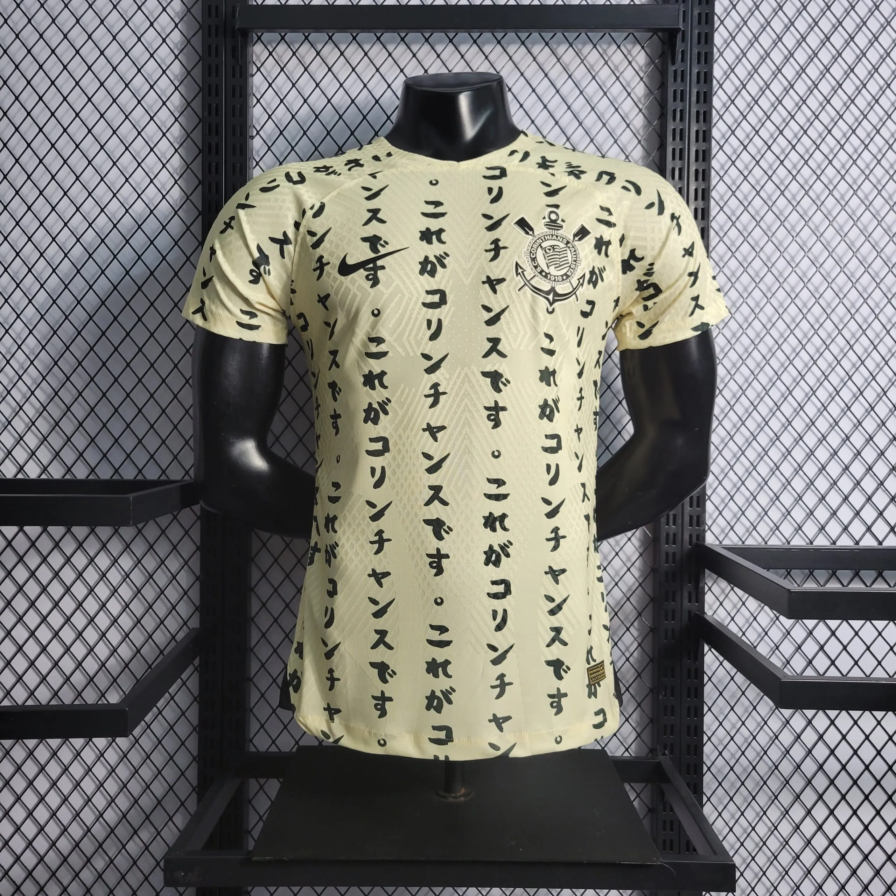
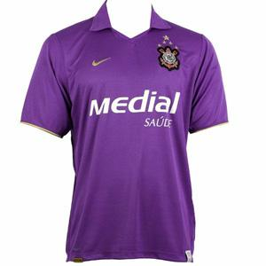
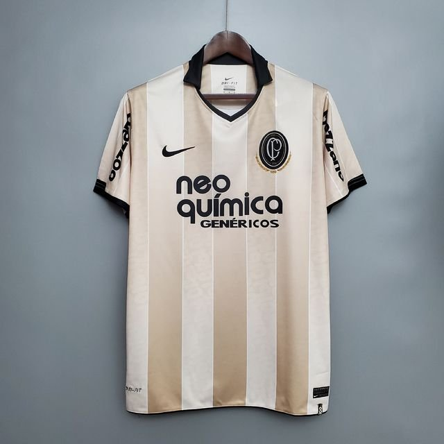

HISTÓRIA DAS CAMISAS DO CORINTHIANS
O Sport Club Corinthians Paulista tem uma longa história de camisas icônicas que representam o clube. Abaixo, destacamos alguns dos momentos mais marcantes na história das camisas do Corinthians:
1910
Camisa Inicial Bege
A primeira camisa oficial do Corinthians era na cor bege, uma homenagem ao Corinthian FC. No entanto, devido ao desbotamento do tecido bege após algumas lavagens, o clube optou por adotar definitivamente camisas brancas.
1920
Transição para Camisa Branca
A partir de 1920, o Corinthians começou a jogar com camisas brancas e calções pretos, tornando-se o uniforme oficial. Isso aconteceu quando o clube conseguiu recursos para comprá-los.
Variações na Camisa
Ao longo dos anos, o Corinthians fez algumas modificações na camisa, incluindo versões listradas em preto e branco, camisas pretas e uma com uma faixa branca com o nome do clube, especialmente usada em clássicos contra São Paulo e Santos.
1946
Números nas Camisas
Em 1946, o Corinthians introduziu números nas camisas pela primeira vez em um amistoso contra o River Plate. Isso se tornou obrigatório no Campeonato Paulista de 1948.
1949
Camisa Grená
Em 1949, o clube usou uma camisa grená em homenagem ao Torino, que sofreu um acidente de avião em Turim.
1965
Camisa Azul para a Seleção
Em 1965, o Corinthians usou a camisa azul da seleção brasileira em um amistoso contra o Arsenal, em Londres.
1995
Modelos Alternativos
A partir de 1995, o clube começou a investir em modelos alternativos de uniformes. Isso incluiu camisas desenvolvidas por estilistas estrangeiros e diferentes cores, como preto, cinza e amarelo.
2008
Camisa Roxa
Em 2008, o Corinthians lançou uma camisa roxa, que se tornou popular entre os torcedores, apesar das pressões das torcidas uniformizadas.
2010
Centenário do Clube
Em 2010, o Corinthians lançou uma camisa em comemoração ao centenário do clube, que remetia ao primeiro uniforme usado em 1910, com a cor bege e o escudo com as letras "CP".
